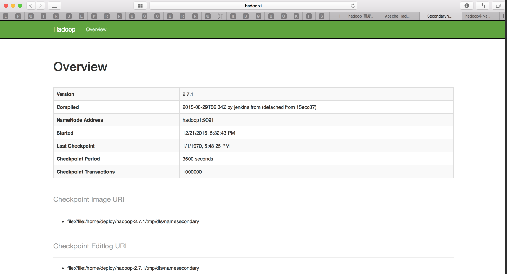
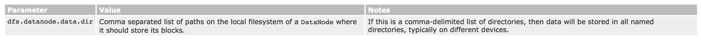

<!DOCTYPE html>
<html lang=ZH>
<head><meta name="generator" content="Hexo 3.8.0">
  <meta charset="utf-8">
  
  <meta http-equiv="X-UA-Compatible" content="IE=edge,chrome=1">
  <meta name="viewport" content="width=device-width, initial-scale=1, maximum-scale=1, minimum-scale=1, user-scalable=no, minimal-ui">
  <meta name="renderer" content="webkit">
  <meta http-equiv="Cache-Control" content="no-transform">
  <meta http-equiv="Cache-Control" content="no-siteapp">
  <meta name="apple-mobile-web-app-capable" content="yes">
  <meta name="apple-mobile-web-app-status-bar-style" content="black">
  <meta name="format-detection" content="telephone=no,email=no,adress=no">
  <!-- Color theme for statusbar -->
  <meta name="theme-color" content="#000000">
  <!-- 强制页面在当前窗口以独立页面显示,防止别人在框架里调用页面 -->
  <meta http-equiv="window-target" content="_top">
  
  
  <title>集群搭建指南（下卷） | 谷震平</title>
  <meta name="description" content="前言什么是Hadoop?  Apache Hadoop is a framework for running applications on large cluster built of commodity hardware. The Hadoop framework transparently provides applications both reliability and data mot">
<meta name="keywords" content="集群运维,Hadoop">
<meta property="og:type" content="article">
<meta property="og:title" content="集群搭建指南（下卷）">
<meta property="og:url" content="http://guzhenping.com/2016/11/02/集群搭建指南--下卷/index.html">
<meta property="og:site_name" content="谷震平的博客">
<meta property="og:description" content="前言什么是Hadoop?  Apache Hadoop is a framework for running applications on large cluster built of commodity hardware. The Hadoop framework transparently provides applications both reliability and data mot">
<meta property="og:locale" content="ZH">
<meta property="og:image" content="http://guzhenping.com/2016/11/02/集群搭建指南--下卷/static/ScreenShot2016-12-21at19.46.35.png">
<meta property="og:image" content="http://guzhenping.com/2016/11/02/集群搭建指南--下卷/static/ScreenShot2016-12-21at20.46.31.png">
<meta property="og:image" content="http://guzhenping.com/2016/11/02/集群搭建指南--下卷/static/ScreenShot2016-12-21at20.59.39.png">
<meta property="og:image" content="http://guzhenping.com/2016/11/02/集群搭建指南--下卷/static/ScreenShot2016-12-21at20.53.57.png">
<meta property="og:image" content="http://guzhenping.com/2016/11/02/集群搭建指南--下卷/static/ScreenShot2016-12-21at20.53.25.png">
<meta property="og:image" content="http://guzhenping.com/2016/11/02/集群搭建指南--下卷/static/ScreenShot2016-12-21at15.00.02.png">
<meta property="og:image" content="http://guzhenping.com/2016/11/02/集群搭建指南--下卷/static/ScreenShot2016-12-21at15.28.03.png">
<meta property="og:image" content="http://guzhenping.com/2016/11/02/集群搭建指南--下卷/static/ScreenShot2016-12-21at15.30.43.png">
<meta property="og:image" content="http://guzhenping.com/2016/11/02/集群搭建指南--下卷/static/ScreenShot2016-12-21at15.32.17.png">
<meta property="og:image" content="http://guzhenping.com/2016/11/02/集群搭建指南--下卷/static/ScreenShot2016-12-21at15.34.06.png">
<meta property="og:image" content="http://guzhenping.com/2016/11/02/集群搭建指南--下卷/static/ScreenShot2016-12-21at15.36.34.png">
<meta property="og:image" content="http://guzhenping.com/2016/11/02/集群搭建指南--下卷/static/ScreenShot2016-12-21at15.37.37.png">
<meta property="og:image" content="http://guzhenping.com/2016/11/02/集群搭建指南--下卷/static/ScreenShot2016-12-21at15.40.22.png">
<meta property="og:image" content="http://guzhenping.com/2016/11/02/集群搭建指南--下卷/static/ScreenShot2016-12-21at15.48.55.png">
<meta property="og:image" content="http://guzhenping.com/2016/11/02/集群搭建指南--下卷/static/ScreenShot2016-12-21at15.41.57.png">
<meta property="og:image" content="http://guzhenping.com/2016/11/02/集群搭建指南--下卷/static/ScreenShot2016-12-21at15.43.03.png">
<meta property="og:image" content="http://guzhenping.com/2016/11/02/集群搭建指南--下卷/static/MapReduce基本概念.png">
<meta property="og:image" content="http://guzhenping.com/2016/11/02/集群搭建指南--下卷/static/MapReduce体系结构图2.png">
<meta property="og:image" content="http://guzhenping.com/2016/11/02/集群搭建指南--下卷/static/HDFS通讯.png">
<meta property="og:updated_time" content="2018-11-30T02:33:15.385Z">
<meta name="twitter:card" content="summary">
<meta name="twitter:title" content="集群搭建指南（下卷）">
<meta name="twitter:description" content="前言什么是Hadoop?  Apache Hadoop is a framework for running applications on large cluster built of commodity hardware. The Hadoop framework transparently provides applications both reliability and data mot">
<meta name="twitter:image" content="http://guzhenping.com/2016/11/02/集群搭建指南--下卷/static/ScreenShot2016-12-21at19.46.35.png">
  <!-- Canonical links -->
  <link rel="canonical" href="http://guzhenping.com/2016/11/02/集群搭建指南--下卷/index.html">
  
    <link rel="alternate" href="/atom.xml" title="谷震平的博客" type="application/atom+xml">
  
  
    <link rel="icon" href="/favicon.png" type="image/x-icon">
  
  <link rel="stylesheet" href="/css/style.css">
  
  
  
  
    <link rel="stylesheet" href="//cdn.jsdelivr.net/npm/gitalk@1.4.0/dist/gitalk.min.css">
  
</head>


<body class="main-center theme-blue" itemscope itemtype="http://schema.org/WebPage">
  <header class="header" itemscope="" itemtype="http://schema.org/WPHeader">
  <div class="slimContent">
    <div class="navbar-header">
      
      
      <div class="profile-block text-center">
        <a id="avatar" href="https://github.com/guzhenping" target="_blank">
          
        </a>
        <h2 id="name" class="hidden-xs hidden-sm">谷震平</h2>
        <h3 id="title" class="hidden-xs hidden-sm hidden-md">大数据，区块链，全沾</h3>
        <small id="location" class="text-muted hidden-xs hidden-sm"><i class="icon icon-map-marker"></i> Beijing, China</small>
      </div>
      
      <div class="search" id="search-form-wrap">

    <form class="search-form sidebar-form">
        <div class="input-group">
            <input type="text" class="search-form-input form-control" placeholder="Search">
            <span class="input-group-btn">
                <button type="submit" class="search-form-submit btn btn-flat" onclick="return false;"><i class="icon icon-search"></i></button>
            </span>
        </div>
    </form>
    <div class="ins-search">
  <div class="ins-search-mask"></div>
  <div class="ins-search-container">
    <div class="ins-input-wrapper">
      <input type="text" class="ins-search-input" placeholder="Type something..." x-webkit-speech="">
      <button type="button" class="close ins-close ins-selectable" data-dismiss="modal" aria-label="Close"><span aria-hidden="true">×</span></button>
    </div>
    <div class="ins-section-wrapper">
      <div class="ins-section-container"></div>
    </div>
  </div>
</div>


</div>
      <button class="navbar-toggle collapsed" type="button" data-toggle="collapse" data-target="#main-navbar" aria-controls="main-navbar" aria-expanded="false">
        <span class="sr-only">Toggle navigation</span>
        <span class="icon-bar"></span>
        <span class="icon-bar"></span>
        <span class="icon-bar"></span>
      </button>
    </div>
    <nav id="main-navbar" class="collapse navbar-collapse" itemscope="" itemtype="http://schema.org/SiteNavigationElement" role="navigation">
      <ul class="nav navbar-nav main-nav ">
        
        
        <li class="menu-item menu-item-home">
          <a href="/.">
            
            <i class="icon icon-home-fill"></i>
            
            <span class="menu-title">Home</span>
          </a>
        </li>
        
        
        <li class="menu-item menu-item-archives">
          <a href="/archives">
            
            <i class="icon icon-archives-fill"></i>
            
            <span class="menu-title">Archives</span>
          </a>
        </li>
        
        
        <li class="menu-item menu-item-repository">
          <a href="https://github.com/guzhenping">
            
            <i class="icon icon-project"></i>
            
            <span class="menu-title">Repository</span>
          </a>
        </li>
        
      </ul>
      
	
    <ul class="social-links">
    	
        <li><a href="https://github.com/guzhenping" target="_blank" title="Github" data-toggle="tooltip" data-placement="top"><i class="icon icon-github"></i></a></li>
        
    </ul>

    </nav>
  </div>
</header>

  
    <aside class="sidebar" itemscope="" itemtype="http://schema.org/WPSideBar">
  <div class="slimContent">
    
      <div class="widget">
    <h3 class="widget-title">Board</h3>
    <div class="widget-body">
        <div id="board">
            <div class="content">
                <p>写点一路的风景，都很普通，主要还是留给自己。</p>
            </div>
        </div>
    </div>
</div>

    
      
  <div class="widget">
    <h3 class="widget-title">Categories</h3>
    <div class="widget-body">
      <ul class="category-list"><li class="category-list-item"><a class="category-list-link" href="/categories/前端/">前端</a><span class="category-list-count">1</span></li><li class="category-list-item"><a class="category-list-link" href="/categories/大数据/">大数据</a><span class="category-list-count">19</span><ul class="category-list-child"><li class="category-list-item"><a class="category-list-link" href="/categories/大数据/可视化/">可视化</a><span class="category-list-count">2</span></li></ul></li><li class="category-list-item"><a class="category-list-link" href="/categories/编程语言/">编程语言</a><span class="category-list-count">1</span></li></ul>
    </div>
  </div>


    
      
  <div class="widget">
    <h3 class="widget-title">Tag Cloud</h3>
    <div class="widget-body tagcloud">
      <a href="/tags/Clickhouse/" style="font-size: 13.25px;">Clickhouse</a> <a href="/tags/Flink/" style="font-size: 13px;">Flink</a> <a href="/tags/Hadoop/" style="font-size: 14px;">Hadoop</a> <a href="/tags/Kudu/" style="font-size: 13px;">Kudu</a> <a href="/tags/Kylin/" style="font-size: 13.25px;">Kylin</a> <a href="/tags/OLAP/" style="font-size: 13.75px;">OLAP</a> <a href="/tags/Python/" style="font-size: 13px;">Python</a> <a href="/tags/Redash/" style="font-size: 13.5px;">Redash</a> <a href="/tags/Redis/" style="font-size: 13px;">Redis</a> <a href="/tags/Vue-js/" style="font-size: 13px;">Vue.js</a> <a href="/tags/前端开发/" style="font-size: 13px;">前端开发</a> <a href="/tags/大数据开发/" style="font-size: 13.75px;">大数据开发</a> <a href="/tags/实时流/" style="font-size: 13px;">实时流</a> <a href="/tags/数据仓库/" style="font-size: 13px;">数据仓库</a> <a href="/tags/集群运维/" style="font-size: 14px;">集群运维</a>
    </div>
  </div>

    
      
  <div class="widget">
    <h3 class="widget-title">Archive</h3>
    <div class="widget-body">
      <ul class="archive-list"><li class="archive-list-item"><a class="archive-list-link" href="/archives/2018/11/">November 2018</a><span class="archive-list-count">3</span></li><li class="archive-list-item"><a class="archive-list-link" href="/archives/2018/10/">October 2018</a><span class="archive-list-count">2</span></li><li class="archive-list-item"><a class="archive-list-link" href="/archives/2018/07/">July 2018</a><span class="archive-list-count">2</span></li><li class="archive-list-item"><a class="archive-list-link" href="/archives/2018/05/">May 2018</a><span class="archive-list-count">4</span></li><li class="archive-list-item"><a class="archive-list-link" href="/archives/2018/01/">January 2018</a><span class="archive-list-count">1</span></li><li class="archive-list-item"><a class="archive-list-link" href="/archives/2017/05/">May 2017</a><span class="archive-list-count">1</span></li><li class="archive-list-item"><a class="archive-list-link" href="/archives/2017/02/">February 2017</a><span class="archive-list-count">1</span></li><li class="archive-list-item"><a class="archive-list-link" href="/archives/2017/01/">January 2017</a><span class="archive-list-count">2</span></li><li class="archive-list-item"><a class="archive-list-link" href="/archives/2016/12/">December 2016</a><span class="archive-list-count">1</span></li><li class="archive-list-item"><a class="archive-list-link" href="/archives/2016/11/">November 2016</a><span class="archive-list-count">4</span></li></ul>
    </div>
  </div>


    
      
  <div class="widget">
    <h3 class="widget-title">Recent Posts</h3>
    <div class="widget-body">
      <ul class="recent-post-list list-unstyled no-thumbnail">
        
          <li>
            
            <div class="item-inner">
              <p class="item-category">
                <a class="category-link" href="/categories/前端/">前端</a>
              </p>
              <p class="item-title">
                <a href="/2018/11/29/前端开发学习笔记(一)/" class="title">前端开发学习笔记(一)</a>
              </p>
              <p class="item-date">
                <time datetime="2018-11-29T09:04:48.000Z" itemprop="datePublished">2018-11-29</time>
              </p>
            </div>
          </li>
          
          <li>
            
            <div class="item-inner">
              <p class="item-category">
                <a class="category-link" href="/categories/大数据/">大数据</a>
              </p>
              <p class="item-title">
                <a href="/2018/11/02/大数据开发学习--Redis/" class="title">大数据开发学习--Redis</a>
              </p>
              <p class="item-date">
                <time datetime="2018-11-02T09:04:49.000Z" itemprop="datePublished">2018-11-02</time>
              </p>
            </div>
          </li>
          
          <li>
            
            <div class="item-inner">
              <p class="item-category">
                <a class="category-link" href="/categories/大数据/">大数据</a>
              </p>
              <p class="item-title">
                <a href="/2018/11/02/大数据开发学习--Redash/" class="title">Redash开发指南</a>
              </p>
              <p class="item-date">
                <time datetime="2018-11-02T09:04:48.000Z" itemprop="datePublished">2018-11-02</time>
              </p>
            </div>
          </li>
          
          <li>
            
            <div class="item-inner">
              <p class="item-category">
                <a class="category-link" href="/categories/大数据/">大数据</a>
              </p>
              <p class="item-title">
                <a href="/2018/10/29/大数据开发学习--Flink/" class="title">大数据开发学习（Flink）</a>
              </p>
              <p class="item-date">
                <time datetime="2018-10-29T09:04:48.000Z" itemprop="datePublished">2018-10-29</time>
              </p>
            </div>
          </li>
          
          <li>
            
            <div class="item-inner">
              <p class="item-category">
                <a class="category-link" href="/categories/大数据/">大数据</a>
              </p>
              <p class="item-title">
                <a href="/2018/10/26/大数据开发学习--Kylin应用/" class="title">Kylin应用篇</a>
              </p>
              <p class="item-date">
                <time datetime="2018-10-26T09:04:48.000Z" itemprop="datePublished">2018-10-26</time>
              </p>
            </div>
          </li>
          
      </ul>
    </div>
  </div>
  

    
  </div>
</aside>

  
  
<main class="main" role="main">
  <div class="content">
  <article id="post-集群搭建指南--下卷" class="article article-type-post" itemscope="" itemtype="http://schema.org/BlogPosting">
    
    <div class="article-header">
      
        
  
    <h1 class="article-title" itemprop="name">
      集群搭建指南（下卷）
    </h1>
  

      
      <div class="article-meta">
        <span class="article-date">
    <i class="icon icon-calendar-check"></i>
	<a href="/2016/11/02/集群搭建指南--下卷/" class="article-date">
	  <time datetime="2016-11-02T09:04:48.000Z" itemprop="datePublished">2016-11-02</time>
	</a>
</span>
        
  <span class="article-category">
    <i class="icon icon-folder"></i>
    <a class="article-category-link" href="/categories/大数据/">大数据</a>
  </span>

        
  <span class="article-tag">
    <i class="icon icon-tags"></i>
	<a class="article-tag-link" href="/tags/Hadoop/">Hadoop</a>, <a class="article-tag-link" href="/tags/集群运维/">集群运维</a>
  </span>


        

        <span class="post-comment"><i class="icon icon-comment"></i> <a href="/2016/11/02/集群搭建指南--下卷/#comments" class="article-comment-link">Comments</a></span>
        
	
		<span class="post-wordcount hidden-xs" itemprop="wordCount">Word Count: 3k(words)</span>
	
	
		<span class="post-readcount hidden-xs" itemprop="timeRequired">Read Count: 13(minutes)</span>
	

      </div>
    </div>
    <div class="article-entry marked-body" itemprop="articleBody">
      
        <h2 id="前言"><a href="#前言" class="headerlink" title="前言"></a>前言</h2><p><strong>什么是Hadoop?</strong></p>
<blockquote>
<p>Apache Hadoop is a framework for running applications on large cluster built of commodity hardware. The Hadoop framework transparently provides applications both reliability and data motion. Hadoop implements a computational paradigm named Map/Reduce, where the application is divided into many small fragments of work, each of which may be executed or re-executed on any node in the cluster. In addition, it provides a distributed file system (HDFS) that stores data on the compute nodes, providing very high aggregate bandwidth across the cluster. Both MapReduce and the Hadoop Distributed File System are designed so that node failures are automatically handled by the framework.</p>
</blockquote>
<p>本文是用于搭建hadoop集群的学习性文章，主要对hadoop的一些基础知识进行解释，中间穿插着hadoop的安装配置过程。</p>
<p>环境问题：</p>
<ul>
<li>系统：Centos 6.5 64位 minamal版本</li>
<li>hadoop版本：2.7.1 </li>
<li>java版本：1.8</li>
</ul>
<p>可能不具备通用性，仅供参考。<br><a id="more"></a></p>
<h2 id="安装概览"><a href="#安装概览" class="headerlink" title="安装概览"></a>安装概览</h2><p>安装完系统，调通集群内的网络（ssh）,配置好java环境，再进行hadoop的安装。</p>
<p>安装hadoop时，集中精力配置namenode节点这一台机器，修改相关的配置文件，然后使用同步文件（scp）到其他机器上去，hadoop集群搭建即可完成。</p>
<p>值得一提，集群间必须网络通畅，否则无法完成分布式部署。有关问题参见—-集群搭建指南（中卷）。</p>
<p>另外，在生成环境中，hadoop的安装均在普通账户下（比如：deploy）完成。所以，新手请注意将java及hadoop安装在开发账户下（是deploy账户的话，位置一般是：/home/deploy/jdk1.8.0_111, /home/deploy/hadoop-2.7.1）。再通过修改账户目录下的 ~/.bash_profile文件修改环境变量。</p>
<h2 id="安装步骤"><a href="#安装步骤" class="headerlink" title="安装步骤"></a>安装步骤</h2><p>对于5个节点的集群（hadoop1-hadoop5），配置节点hadoop1即可。hadoop集群有很多特性，这里仅设置低配版的hadoop,不添加太多配置属性值，以减轻学习压力。</p>
<blockquote>
<p>This document does not cover advanced topics such as Security or High Availability.</p>
</blockquote>
<p>尽管只添加部分属性值，也需要配7个文件：</p>
<ul>
<li>core-site.xml</li>
<li>hdfs-site.xml</li>
<li>yarn-site.xml</li>
<li>mapred-site.xml</li>
<li>hadoop-env.sh</li>
<li>yarn-env.sh</li>
<li>slaves</li>
</ul>
<p>7个文件的解释，参见:hadoop基础知识-&gt;1. 配置文件说明。</p>
<p>配置前，假设是:</p>
<ul>
<li>在deploy账户下进行配置</li>
<li>hadoop文件在：/home/deploy/hadoop-2.7.1/</li>
<li>java文件在：/home/deploy/jdk1.8.0_111</li>
</ul>
<p>在/home/deploy/hadoop-2.7.1/目录下，新建文件夹：tmp, hdfs, hdfs/data, hdfs/name</p>
<p>完成后，文件结构是这样：</p>
<p></p>
<p>接下来准备配置，如果在配置过程中发现没有该文件，可以自己新建。如果文件已有内容，可以全部删除/注释，然后添加下述配置。另外，本节给出的多有示例配置的端口都可自己定义，不必追求一致。</p>
<h3 id="core-site-xml"><a href="#core-site-xml" class="headerlink" title="core-site.xml"></a>core-site.xml</h3><p>命令：<code>vi  /home/deploy/hadoop-2.7.1/etc/hadoop/core-site.xml</code></p>
<pre><code>&lt;configuration&gt;
    &lt;property&gt;
        &lt;name&gt;fs.defaultFS&lt;/name&gt;
        &lt;value&gt;hdfs://hadoop1:9091&lt;/value&gt;
        &lt;final&gt;true&lt;/final&gt;
    &lt;/property&gt;
    &lt;property&gt;
        &lt;name&gt;hadoop.tmp.dir&lt;/name&gt;
        &lt;value&gt;file:/home/deploy/hadoop-2.7.1/tmp&lt;/value&gt;
        &lt;description&gt;Abasefor oteh temporary directories.&lt;/description&gt;
    &lt;/property&gt;
&lt;/configuration&gt;
</code></pre><h3 id="hdfs-site-xml"><a href="#hdfs-site-xml" class="headerlink" title="hdfs-site.xml"></a>hdfs-site.xml</h3><p>命令：<code>vi  /home/deploy/hadoop-2.7.1/etc/hadoop/hdfs-site.xml</code></p>
<pre><code>&lt;configuration&gt;
    &lt;!--配置NameNode--&gt;
    &lt;property&gt;
        &lt;name&gt;dfs.namenode.name.dir&lt;/name&gt;
        &lt;value&gt;file:/home/deploy/hadoop-2.7.1/hdfs/name&lt;/value&gt;
    &lt;/property&gt;

    &lt;!--配置DataNode--&gt;
    &lt;property&gt;
        &lt;name&gt;dfs.datanode.data.dir&lt;/name&gt;
        &lt;value&gt;file:/home/deploy/hadoop-2.7.1/hdfs/data&lt;/value&gt;
    &lt;/property&gt;

    &lt;!--配置Secondary Namenode --&gt;
    &lt;property&gt;
        &lt;name&gt;dfs.namenode.secondary.http-address&lt;/name&gt;
        &lt;value&gt;hadoop1:9095&lt;/value&gt;
    &lt;/property&gt;

    &lt;!--修改默认的HDFS配置--&gt;
    &lt;property&gt;
        &lt;name&gt;dfs.replication&lt;/name&gt;
        &lt;value&gt;2&lt;/value&gt;
    &lt;/property&gt;
    &lt;property&gt;
        &lt;name&gt;dfs.webhdfs.enabled&lt;/name&gt;
        &lt;value&gt;true&lt;/value&gt;
    &lt;/property&gt;

&lt;/configuration&gt;
</code></pre><h3 id="yarn-site-xml"><a href="#yarn-site-xml" class="headerlink" title="yarn-site.xml"></a>yarn-site.xml</h3><p>命令：<code>vi /home/deploy/hadoop-2.7.1/etc/hadoop/yarn-site.xml</code></p>
<pre><code>&lt;configuration&gt;
    &lt;!--下述配置NodeManger--&gt;
    &lt;property&gt;
         &lt;name&gt;yarn.nodemanager.aux-services&lt;/name&gt;
         &lt;value&gt;mapreduce_shuffle&lt;/value&gt;
    &lt;/property&gt;
    &lt;property&gt;
         &lt;name&gt;yarn.nodemanager.resource.memory-mb&lt;/name&gt;
         &lt;value&gt;1024&lt;/value&gt;
    &lt;/property&gt;
    &lt;property&gt;
         &lt;name&gt;yarn.nodemanager.resource.cpu-vcores&lt;/name&gt;
         &lt;value&gt;1&lt;/value&gt;
    &lt;/property&gt;

    &lt;!--下述配置ResourceManager --&gt;    
    &lt;property&gt;
         &lt;name&gt;yarn.resourcemanager.webapp.address&lt;/name&gt;
         &lt;value&gt;hadoop1:9099&lt;/value&gt;
    &lt;/property&gt;
    &lt;property&gt;
         &lt;name&gt;yarn.resourcemanager.hostname&lt;/name&gt;
         &lt;value&gt;hadoop1&lt;/value&gt;
    &lt;/property&gt;
&lt;/configuration&gt;
</code></pre><h3 id="mapred-site-xml"><a href="#mapred-site-xml" class="headerlink" title="mapred-site.xml"></a>mapred-site.xml</h3><p>命令：<code>vi /home/deploy/hadoop-2.7.1/etc/hadoop/mapred-site.xml</code></p>
<pre><code>&lt;configuration&gt;
    &lt;!--配置MaoReduce应用--&gt;
    &lt;property&gt;
        &lt;name&gt;mapreduce.framework.name&lt;/name&gt;
        &lt;value&gt;yarn&lt;/value&gt;
    &lt;/property&gt;
&lt;/configuration&gt;
</code></pre><h3 id="hadoop-env-sh"><a href="#hadoop-env-sh" class="headerlink" title="hadoop-env.sh"></a>hadoop-env.sh</h3><p>命令：<code>vi /home/deploy/hadoop-2.7.1/etc/hadoop/hadoop-env.sh</code></p>
<p>找到export JAVA_HOME的地方，将原来的内容注释，换成：<br><code>export JAVA_HOME=/home/deploy/jdk1.8.0_111</code></p>
<h3 id="yarn-env-sh"><a href="#yarn-env-sh" class="headerlink" title="yarn-env.sh"></a>yarn-env.sh</h3><p>命令：<code>vi /home/deploy/hadoop-2.7.1/etc/hadoop/yarn-env.sh</code></p>
<p>找到export JAVA_HOME的地方，将原来的内容注释，换成：<br><code>export JAVA_HOME=/home/deploy/jdk1.8.0_111</code></p>
<h3 id="slaves"><a href="#slaves" class="headerlink" title="slaves"></a>slaves</h3><p>命令：<code>vi /home/deploy/hadoop-2.7.1/etc/hadoop/slaves</code></p>
<p>添加你所有datanode节点的hostname,假设有5个节点，名称是hadoop1-5(hadoop1作为namenode),则添加内容：</p>
<pre><code>hadoop2
hadoop3
hadoop4
hadoop5
</code></pre><h2 id="启动hadoop集群"><a href="#启动hadoop集群" class="headerlink" title="启动hadoop集群"></a>启动hadoop集群</h2><p>配置完所有的文件，在该机器（假设是hadoop1）上使用scp命令到其他4台机器上。<br>命令：</p>
<pre><code>scp -r /home/deploy/hadoop-2.7.1/*  deploy@hadoop2:/home/deploy/hadoop-2.7.1/
scp -r /home/deploy/hadoop-2.7.1/*  deploy@hadoop3:/home/deploy/hadoop-2.7.1/
scp -r /home/deploy/hadoop-2.7.1/*  deploy@hadoop4:/home/deploy/hadoop-2.7.1/
scp -r /home/deploy/hadoop-2.7.1/*  deploy@hadoop5:/home/deploy/hadoop-2.7.1/
</code></pre><p>这样集群的配置文件就都一样了。然后,在hadoop1上执行命令，将集群格式化成一个分布式文件系统，执行：<code>/home/deploy/hadoop-2.7.1/bin/hdfs namenode -format</code></p>
<p><strong>（注：该命令只能执行一次，多次执行的话，需清空前一次执行产生的hdfs/data/、hdfs/name/和tmp/文件夹下生成的文件。但是这样，老集群的数据就会丢失。相关问题已网上的解答为准。）</strong></p>
<p>接下来启动集群：<br><code>bash /home/deploy/hadoop-2.7.1/sbin/start-all.sh</code></p>
<p>查看相关的UI Web界面：<br></p>
<p>按这里的配置，Namenode程序的可视化界面在hadoop1:50070/(使用的默认端口）,如图：</p>
<p></p>
<p>Secondery Namenode程序的可视化界面在hadoop1:9095/（使用的自定义端口）, 如图：</p>
<p></p>
<p>ResourceManager程序的可视化界面在hadoop1:9099/（使用的自定义端口），如图：</p>
<p></p>
<p>最后，关闭集群：<code>bash /home/deploy/hadoop-2.7.1/sbin/stop-all.sh</code></p>
<h2 id="hadoop基础知识"><a href="#hadoop基础知识" class="headerlink" title="hadoop基础知识"></a>hadoop基础知识</h2><h3 id="1-配置文件说明"><a href="#1-配置文件说明" class="headerlink" title="1. 配置文件说明"></a>1. 配置文件说明</h3><p>简单的配置无安全性的hadoop集群，需要修改：</p>
<ul>
<li>core-site.xml</li>
<li>hdfs-site.xml</li>
<li>yarn-site.xml</li>
<li>mapred-site.xml</li>
<li>hadoop-env.sh</li>
<li>yarn-env.sh</li>
<li>slaves</li>
</ul>
<p>这7个文件均在同一目录：hadoop安装包名/etc/hadoop/。</p>
<blockquote>
<p>To configure the Hadoop cluster you will need to configure the environment in which the Hadoop daemons execute as well as the configuration parameters for the Hadoop daemons.</p>
</blockquote>
<p>Hadoop由HDFS、Yarn、MapReduce等组成，hadoop的后台程序，其实就是他们的后台程序。</p>
<p>HDFS后台程序有NameNode,SecondaryNode和DataNode。YARN后台程序有ResourceManager,NodeManager和WebAppProxy。如果MapReduce框架被启用了，MapReduce Job History Server将会运行。（安装完hadoop后，使用jps命令可以看到这些后台程序的名称。）</p>
<h4 id="1-1-配置hadoop后台程序的环境"><a href="#1-1-配置hadoop后台程序的环境" class="headerlink" title="1.1 配置hadoop后台程序的环境"></a>1.1 配置hadoop后台程序的环境</h4><p>管理员可以使用hadoop-env.sh，也可选择性使用mapred-env.sh和yarn-env.sh脚本定制haddoop后台程序的环境。</p>
<p>至少，必须指定JAVA_HOME，以确保正确定义每一个远程节点。</p>
<p>可以配置的选择，在下图：<br></p>
<h4 id="1-2-配置hadoop后台程序"><a href="#1-2-配置hadoop后台程序" class="headerlink" title="1.2 配置hadoop后台程序"></a>1.2 配置hadoop后台程序</h4><p>这部分处理在给定的配置文件中需要被指定的重要参数。</p>
<ul>
<li>etc/hadoop/core-site.xml</li>
</ul>
<p></p>
<ul>
<li>etc/hadoop/hdfs-site.xml</li>
</ul>
<p>配置NameNode:</p>
<p></p>
<p>配置DataNode:</p>
<p></p>
<ul>
<li>etc/hadoop/yarn-site.xml</li>
</ul>
<p>配置ResourceManager和NodeManager：</p>
<p></p>
<p>配置ResourceManager:</p>
<p></p>
<p>配置NodeManager:</p>
<p></p>
<p>配置History Server:</p>
<p></p>
<p>配置NodeManagers的健康监控：</p>
<p></p>
<ul>
<li>etc/hadoop/mapred-site.xml</li>
</ul>
<p>配置MapReduce应用：</p>
<p></p>
<p>配置MapReduce JobHistory Server:<br></p>
<ul>
<li>slaves</li>
</ul>
<blockquote>
<p>List all slave hostnames or IP addresses in your etc/hadoop/slaves file, one per line. Helper scripts (described below) will use the etc/hadoop/slaves file to run commands on many hosts at once. It is not used for any of the Java-based Hadoop configuration. In order to use this functionality, ssh trusts (via either passphraseless ssh or some other means, such as Kerberos) must be established for the accounts used to run Hadoop.</p>
</blockquote>
<h3 id="2-Hadoop-Map-Reduce框架"><a href="#2-Hadoop-Map-Reduce框架" class="headerlink" title="2. Hadoop Map/Reduce框架"></a>2. Hadoop Map/Reduce框架</h3><h4 id="2-1-Programming-model-and-execution-framework"><a href="#2-1-Programming-model-and-execution-framework" class="headerlink" title="2.1 Programming model and execution framework"></a>2.1 Programming model and execution framework</h4><p>Map/Reduce是一种编程范式，用于将大型分布式计算表达为对键/值对数据集的分布式操作序列。Hadoop Map/Reduce框架利用一组机器，并在集群中的所有节点上执行用户定义的Map/Reduce作业。一个Map/Reduce计算包含两个阶段：map阶段和reduce阶段。</p>
<p></p>
<p>在map阶段，框架将输入数据集拆分为大量片段，并将每个片段分配给map任务。框架还在其操作的节点集群上分布许多map任务。每个map任务从其分配的片段消耗键/值对，并产生一组<strong>中间</strong>键/值对。 对于每个输入的键/值对（K,V），map任务将调用户自定义的map函数。该函数将输入变换为不同的键/值对(K’,V’)。</p>
<p>map阶段过后，Map/Reduce框架通过键对中间数据集进行排序，并产一组（K‘,V’*）元组，使得与特定键相关联的所有值一起出现。它还将元组的集合（这组（K’,V’）元组）分割成等于reduce任务的数目的多个片段。</p>
<p>在reduce阶段，每个reduce任务消耗分配给他的（K’,V’*）元组的片段。对于每个这样的元组，它调用用户自定义的reduce函数，其将元组变换为输出值键/值对(K,V)。框架又一次在节点集群上分配许多reduce任务，并处理将合适的中间数据片段运送到每个reduce任务的事情。</p>
<p></p>
<p>关于hadoop的任务（tasks），有三个特点:</p>
<ul>
<li>每个阶段的任务以容错方式（a fault-tolerant manner）执行，如果节点（多个节点）在计算中间失败，则分配给它（它们）的任务在其余节点之间重新分布</li>
<li>任务较多（有许多map和reduce）时，能够实现良好的负载平衡</li>
<li>允许失败的任务以最小的运行时间开销重新运行</li>
</ul>
<h4 id="2-2-Architecture"><a href="#2-2-Architecture" class="headerlink" title="2.2 Architecture"></a>2.2 Architecture</h4><p>Hadoop Map/Reduce框架是主(master)/从(slave)架构。它有一个主服务器或jobtracker和几个从服务器或tasktrackers。jobtracker是用户和框架之间的交互点。用户向jobtracker提交map/reduce作业，将作业（job/jobs）放在待处理作业的队列中，并按先到先服务（first-come/first-served）的方式执行。jobtracker管理map和reduce任务到tasktracker的分配。tasktracker根据jobtracker的指令执行任务，并处理map和reduce阶段之间的数据移动。</p>
<h4 id="2-3-Map-Reduce框架小结"><a href="#2-3-Map-Reduce框架小结" class="headerlink" title="2.3 Map/Reduce框架小结"></a>2.3 Map/Reduce框架小结</h4><p>网上有很多以上原理的过程图，在hadoop官网上没有找到，但言语上描述的相当清楚。如有需求，自行网上找图。</p>
<h3 id="3-Hadoop-DFS"><a href="#3-Hadoop-DFS" class="headerlink" title="3. Hadoop DFS"></a>3. Hadoop DFS</h3><h4 id="3-1-介绍"><a href="#3-1-介绍" class="headerlink" title="3.1 介绍"></a>3.1 介绍</h4><p>Hadoop的分布式文件系统旨在：能够在跨大型集群中的机器上可靠地存储非常大的文件。它的灵感来自Google文件系统。Hadoop DFS将每个文件存储为一个块序列，文件中除最后一个块之外的所有块都具有相同的大小。属于文件的块将被复制以实现容错。块大小（block size）和复制因子(replication factor)可以按文件配置。HDFS中的文件是“一次写入”，并且在任何时间都有一个写入程序。</p>
<h4 id="3-2-Architecture"><a href="#3-2-Architecture" class="headerlink" title="3.2 Architecture"></a>3.2 Architecture</h4><p>像Hadoop Map/Reduce一样，HDFS遵循主/从架构。HDFS的安装包含一个Namenode,即一个主服务器，用于管理文件系统命名空间并控制客户端对文件的访问。此外，还有一些Datanodes,管理存储附加到他们运行的节点。Namenode进行文件系统命名空间操作，例如：通过RPC接口打开、关闭、重命名等文件和目录。它还确定块（block）到Datanodes的映射。Datanodes负责从文件系统客户端提供读取和写入请求，它们还根据Namenode的指令执行块创建、删除和复制。</p>
<p></p>
<h2 id="参考资料"><a href="#参考资料" class="headerlink" title="参考资料"></a>参考资料</h2><ul>
<li><a href="https://segmentfault.com/a/1190000000709725" target="_blank" rel="noopener">Hadoop参数汇总</a></li>
<li><a href="https://wiki.apache.org/hadoop/FrontPage?action=recall&amp;rev=308" target="_blank" rel="noopener">Hadoop官网文档–cluster setup instructions in latest 2.x stable release docs</a></li>
<li><a href="https://my.oschina.net/jeeker/blog/620356?p=%7B%7BcurrentPage-1%7D%7D" target="_blank" rel="noopener">hadoop中NameNode、DataNode、Secondary、NameNode、JobTra</a></li>
</ul>

      
    </div>
    <div class="article-footer">
      <blockquote class="mt-2x">
  <ul class="post-copyright list-unstyled">
    
    <li class="post-copyright-link hidden-xs">
      <strong>本文链接：</strong>
      <a href="http://guzhenping.com/2016/11/02/集群搭建指南--下卷/" title="集群搭建指南（下卷）" target="_blank" rel="external">http://guzhenping.com/2016/11/02/集群搭建指南--下卷/</a>
    </li>
    
    <li class="post-copyright-license">
      <strong>版权声明： </strong> 本博客所有文章除特别声明外，均采用 <a href="http://creativecommons.org/licenses/by/4.0/deed.zh" target="_blank" rel="external">CC BY 4.0 CN协议</a> 许可协议。转载请注明出处！
    </li>
  </ul>
</blockquote>


<div class="panel panel-default panel-badger">
  <div class="panel-body">
    <figure class="media">
      <div class="media-left">
        <a href="https://github.com/guzhenping" target="_blank" class="img-burn thumb-sm visible-lg">
          
        </a>
      </div>
      <div class="media-body">
        <h3 class="media-heading"><a href="https://github.com/guzhenping" target="_blank"><span class="text-dark">谷震平</span><small class="ml-1x">大数据，区块链，全沾</small></a></h3>
        <div>工作两年多，在大数据和数仓领域搞过前后端系统开发，SQL建模和数据可视化。个人比较喜欢折腾，对新技术都很感兴趣；热衷开源项目，是区块链项目EKT的contributor。比较喜欢要求复合能力的岗位。个人blog：http://guzhenping.com。</div>
      </div>
    </figure>
  </div>
</div>


    </div>
  </article>
  
    
  <section id="comments">
  	
           
    
  </section>


  
</div>

  <nav class="bar bar-footer clearfix" data-stick-bottom="">
  <div class="bar-inner">
  
  <ul class="pager pull-left">
    
    <li class="prev">
      <a href="/2016/11/09/集群搭建指南--中卷/" title="集群搭建指南（下卷）"><i class="icon icon-angle-left" aria-hidden="true"></i><span>&nbsp;&nbsp;Newer</span></a>
    </li>
    
    
    <li class="next">
      <a href="/2016/11/02/Hadoop学习指南--HDFS篇/" title="Hadoop学习指南(HDFS篇)"><span>Older&nbsp;&nbsp;</span><i class="icon icon-angle-right" aria-hidden="true"></i></a>
    </li>
    
    
  </ul>
  
  
  <!-- Button trigger modal -->
  <button type="button" class="btn btn-fancy btn-donate pop-onhover bg-gradient-warning" data-toggle="modal" data-target="#donateModal"><span>$</span></button>
  <!-- <div class="wave-icon wave-icon-danger btn-donate" data-toggle="modal" data-target="#donateModal">
    <div class="wave-circle"><span class="icon"><i class="icon icon-bill"></i></span></div>
  </div> -->
  
  
  <div class="bar-right">
    
    <div class="share-component" data-sites="weibo,qq,wechat,facebook,twitter" data-mobile-sites="weibo,qq,qzone"></div>
    
  </div>
  </div>
</nav>
  
<!-- Modal -->
<div class="modal modal-center modal-small modal-xs-full fade" id="donateModal" tabindex="-1" role="dialog">
  <div class="modal-dialog" role="document">
    <div class="modal-content donate">
      <button type="button" class="close" data-dismiss="modal" aria-label="Close"><span aria-hidden="true">&times;</span></button>
      <div class="modal-body">
        <div class="donate-box">
          <div class="donate-head">
            <p>Maybe you could buy me a cup of coffee.</p>
          </div>
          <div class="tab-content">
            <div role="tabpanel" class="tab-pane fade active in" id="alipay">
              <div class="donate-payimg">
                
              </div>
              <p class="text-muted mv">Scan this qrcode</p>
              <p class="text-grey">Open alipay app scan this qrcode, buy me a coffee!</p>
            </div>
            <div role="tabpanel" class="tab-pane fade" id="wechatpay">
              <div class="donate-payimg">
                
              </div>
              <p class="text-muted mv">Scan this qrcode</p>
              <p class="text-grey">Open wechat app scan this qrcode, buy me a coffee!</p>
            </div>
          </div>
          <div class="donate-footer">
            <ul class="nav nav-tabs nav-justified" role="tablist">
              <li role="presentation" class="active">
                <a href="#alipay" id="alipay-tab" role="tab" data-toggle="tab" aria-controls="alipay" aria-expanded="true"><i class="icon icon-alipay"></i> alipay</a>
              </li>
              <li role="presentation" class="">
                <a href="#wechatpay" role="tab" id="wechatpay-tab" data-toggle="tab" aria-controls="wechatpay" aria-expanded="false"><i class="icon icon-wepay"></i> wechat payment</a>
              </li>
            </ul>
          </div>
        </div>
      </div>
    </div>
  </div>
</div>


</main>

  <footer class="footer" itemscope="" itemtype="http://schema.org/WPFooter">
	
	
    <ul class="social-links">
    	
        <li><a href="https://github.com/guzhenping" target="_blank" title="Github" data-toggle="tooltip" data-placement="top"><i class="icon icon-github"></i></a></li>
        
    </ul>

    <div class="copyright">
    	
        <div class="publishby">
        	Theme by <a href="https://github.com/cofess" target="_blank"> cofess </a>base on <a href="https://github.com/cofess/hexo-theme-pure" target="_blank">pure</a>.
        </div>
    </div>
</footer>
  <script src="//cdn.jsdelivr.net/npm/jquery@1.12.4/dist/jquery.min.js"></script>
<script>
window.jQuery || document.write('<script src="js/jquery.min.js"><\/script>')
</script>
<script src="/js/plugin.min.js"></script>
<script src="/js/application.js"></script>

    <script>
(function (window) {
    var INSIGHT_CONFIG = {
        TRANSLATION: {
            POSTS: 'Posts',
            PAGES: 'Pages',
            CATEGORIES: 'Categories',
            TAGS: 'Tags',
            UNTITLED: '(Untitled)',
        },
        ROOT_URL: '/',
        CONTENT_URL: '/content.json',
    };
    window.INSIGHT_CONFIG = INSIGHT_CONFIG;
})(window);
</script>
<script src="/js/insight.js"></script>


   


   
    
  <!-- <link rel="stylesheet" href="https://unpkg.com/gitalk/dist/gitalk.css"> -->
  <script src="//cdn.jsdelivr.net/npm/gitalk@1.4.1/dist/gitalk.min.js"></script>
  <script src="//cdn.jsdelivr.net/npm/blueimp-md5@2.10.0/js/md5.min.js"></script>
  <script type="text/javascript">
  var gitalk = new Gitalk({
    clientID: '56c1090d7aa4c319afd6',
    clientSecret: 'af0b1ffe65ccb76f30db67aee5044cd68de06ef0',
    repo: 'guzhenping-blog',
    owner: 'guzhenping',
    admin: ['guzhenping'],
    id: md5(location.pathname),
    distractionFreeMode: true
  })
  gitalk.render('comments')
  </script>

      


    <script defer type="text/javascript">
(function(i,s,o,g,r,a,m) {i['GoogleAnalyticsObject']=r;i[r]=i[r]||function() {
(i[r].q=i[r].q||[]).push(arguments)},i[r].l=1*new Date();a=s.createElement(o),
m=s.getElementsByTagName(o)[0];a.async=1;a.src=g;m.parentNode.insertBefore(a,m)
})(window,document,'script','//www.google-analytics.com/analytics.js','ga');

ga('create', 'UA-130235136-1', 'auto');
ga('send', 'pageview');

</script>


</body>
<!-- ad start -->
<script async src="//pagead2.googlesyndication.com/pagead/js/adsbygoogle.js"></script>
<script>
  (adsbygoogle = window.adsbygoogle || []).push({
    google_ad_client: "ca-pub-4087625624030781",
    enable_page_level_ads: true
  });
</script>

<!-- ad end -->
</html>
